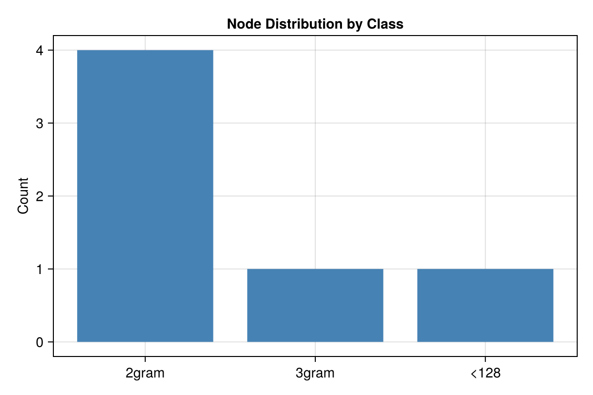
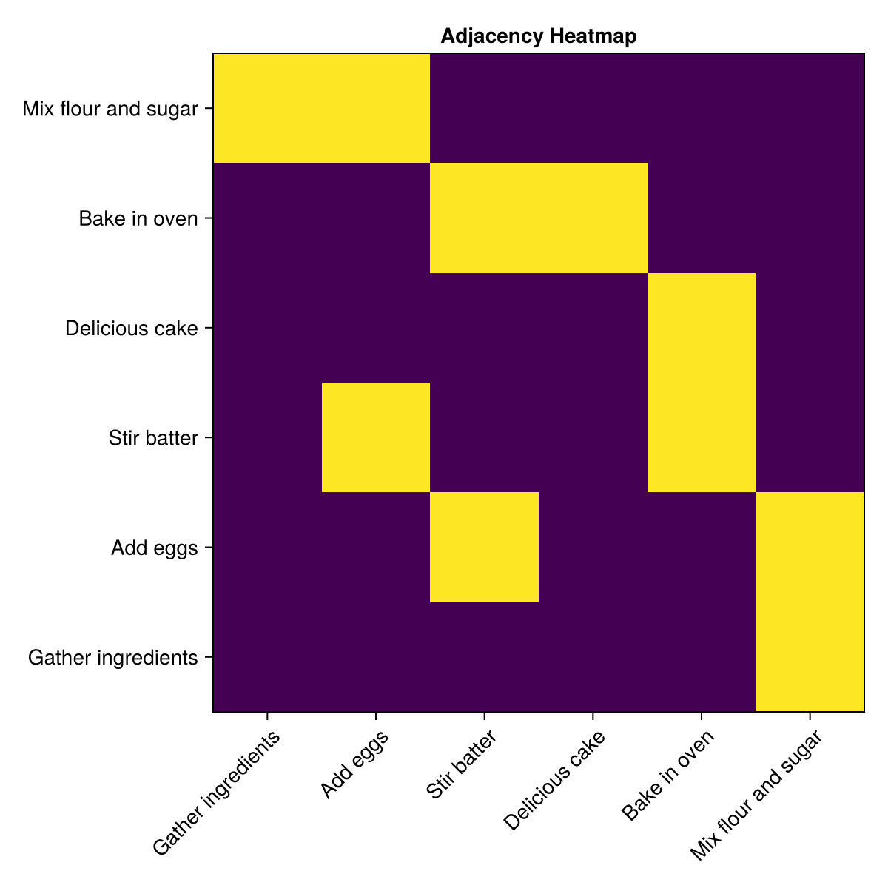
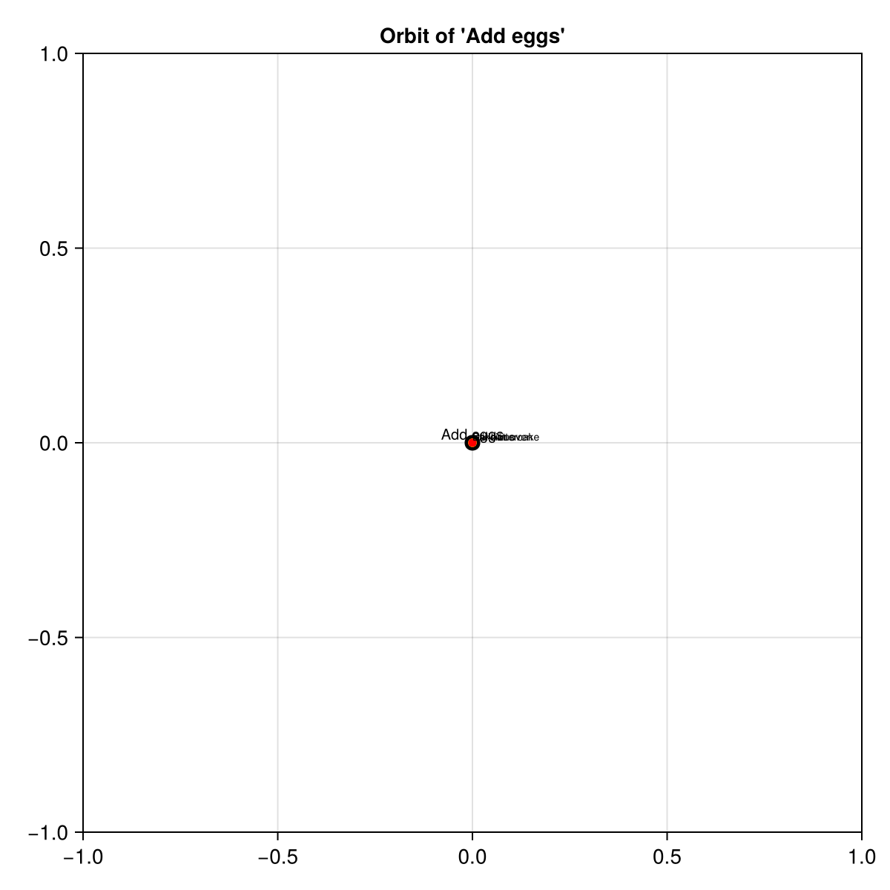
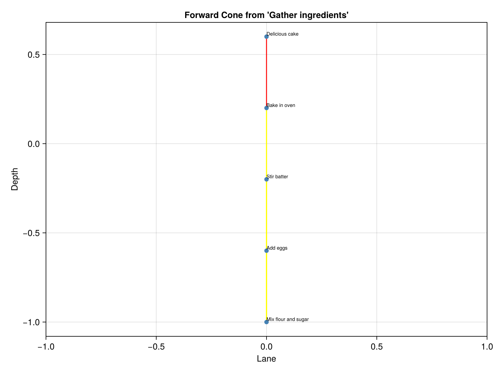

Visualization
SemanticSpacetime.jl provides two visualization approaches: CairoMakie plots for interactive/raster output, and GraphViz DOT export for graph layout.
Setup
First, let's build a small graph to visualize:
using SemanticSpacetime
using CairoMakie
add_mandatory_arrows!()
store = MemoryStore()
# Build a small knowledge graph about a recipe
n1 = mem_vertex!(store, "Gather ingredients", "recipe")
n2 = mem_vertex!(store, "Mix flour and sugar", "recipe")
n3 = mem_vertex!(store, "Add eggs", "recipe")
n4 = mem_vertex!(store, "Stir batter", "recipe")
n5 = mem_vertex!(store, "Bake in oven", "recipe")
n6 = mem_vertex!(store, "Delicious cake", "recipe")
mem_edge!(store, n1, "then", n2)
mem_edge!(store, n2, "then", n3)
mem_edge!(store, n3, "then", n4)
mem_edge!(store, n4, "then", n5)
mem_edge!(store, n5, "expresses", n6)Graph Summary
Bar chart showing the distribution of nodes by text size class. The plot_graph_summary function counts nodes by their n-gram class:
nptrs = sort(collect(keys(store.nodes)))
labels_map = Dict(N1GRAM=>"1gram", N2GRAM=>"2gram", N3GRAM=>"3gram",
LT128=>"<128", LT1024=>"<1024", GT1024=>">1024")
class_counts = Dict{Int,Int}()
for (np, _) in store.nodes
class_counts[np.class] = get(class_counts, np.class, 0) + 1
end
classes = sort(collect(keys(class_counts)))
counts = [class_counts[c] for c in classes]
class_labels = [get(labels_map, c, "?") for c in classes]
fig = Figure(size=(600, 400))
ax = Axis(fig[1, 1]; title="Node Distribution by Class",
xticks=(1:length(classes), class_labels), ylabel="Count")
barplot!(ax, 1:length(classes), counts; color=:steelblue)
fig
Adjacency Heatmap
Build a dense adjacency matrix and plot it as a heatmap with plot_adjacency_heatmap:
nptrs = sort(collect(keys(store.nodes)))
labels = [mem_get_node(store, np).s for np in nptrs]
n = length(nptrs)
adj = zeros(Float32, n, n)
ptr_idx = Dict(np => i for (i, np) in enumerate(nptrs))
for (i, np) in enumerate(nptrs)
node = mem_get_node(store, np)
for stvec in node.incidence
for lnk in stvec
j = get(ptr_idx, lnk.dst, 0)
if j > 0
adj[i, j] = lnk.wgt
end
end
end
end
fig = Figure(size=(600, 600))
ax = Axis(fig[1, 1]; title="Adjacency Heatmap",
xticks=(1:n, labels), yticks=(1:n, labels),
xticklabelrotation=π/4)
heatmap!(ax, adj; colormap=:viridis)
fig
Node Orbit
Show a central node with its neighbors arranged by ST type using plot_orbit. Each ring represents a different spacetime relationship:
orbits = get_node_orbit(store, n3.nptr)
fig = Figure(size=(600, 600))
ax = Axis(fig[1, 1]; title="Orbit of 'Add eggs'", aspect=DataAspect())
# Central node
scatter!(ax, [0.0], [0.0]; markersize=15, color=:black)
text!(ax, 0.0, 0.0; text="Add eggs", fontsize=10, align=(:center, :bottom))
for sti in 1:length(orbits)
st = SemanticSpacetime.index_to_sttype(sti)
color = get(ST_COLORS, st, :gray)
for orb in orbits[sti]
scatter!(ax, [orb.xyz.x], [orb.xyz.y]; markersize=8, color=color)
lines!(ax, [orb.ooo.x, orb.xyz.x], [orb.ooo.y, orb.xyz.y];
color=color, linewidth=0.5)
short = length(orb.text) > 20 ? orb.text[1:20] * "…" : orb.text
text!(ax, orb.xyz.x, orb.xyz.y; text=short, fontsize=7,
align=(:left, :bottom))
end
end
fig
Causal Cone
Visualize the forward cone from a starting node using plot_cone. This shows all paths reachable by following forward links:
cone = forward_cone(store, n1.nptr; depth=5)
coords = assign_cone_coordinates(cone.paths, 1, 1)
fig = Figure(size=(800, 600))
ax = Axis(fig[1, 1]; title="Forward Cone from 'Gather ingredients'",
xlabel="Lane", ylabel="Depth")
xs = Float64[]
ys = Float64[]
node_labels = String[]
for (np, c) in coords
push!(xs, c.x)
push!(ys, c.z)
nd = mem_get_node(store, np)
push!(node_labels, isnothing(nd) ? string(np) : nd.s)
end
# Draw links
for path in cone.paths
for (i, lnk) in enumerate(path)
if haskey(coords, lnk.dst) && i > 1
src_nptr = path[i - 1].dst
if haskey(coords, src_nptr)
entry = get_arrow_by_ptr(lnk.arr)
st = isnothing(entry) ? 0 : SemanticSpacetime.index_to_sttype(entry.stindex)
color = get(ST_COLORS, st, :gray)
sc = coords[src_nptr]
dc = coords[lnk.dst]
lines!(ax, [sc.x, dc.x], [sc.z, dc.z];
color=color, linewidth=1.5)
end
end
end
end
scatter!(ax, xs, ys; markersize=10, color=:steelblue)
for (i, lbl) in enumerate(node_labels)
short = length(lbl) > 25 ? lbl[1:25] * "…" : lbl
text!(ax, xs[i], ys[i]; text=short, fontsize=8, align=(:left, :bottom))
end
fig
GraphViz DOT Export
Export the graph as a DOT string using to_dot:
dot_str = to_dot(store; title="Recipe")
join(first(split(dot_str, '\n'), 8), "\n")"digraph \"Recipe\" {\n rankdir=LR;\n node [shape=box, style=filled, fillcolor=lightgrey, fontsize=10];\n n2_3 [label=\"Stir batter\"];\n n2_3 -> n3_1 [label=\"then\", color=\"gold\", fontcolor=\"gold\", fontsize=8];\n n2_1 [label=\"Gather ingredients\"];\n n2_1 -> n4_1 [label=\"then\", color=\"gold\", fontcolor=\"gold\", fontsize=8];\n n2_4 [label=\"Delicious cake\"];"Save directly to a file with save_dot:
save_dot(store, "graph.dot")
save_dot(store, "chapter.dot"; chapter="recipe")The DOT output can also be rendered from the command line with dot, neato, or other GraphViz layout engines:
dot -Tpng graph.dot -o graph.png
dot -Tsvg graph.dot -o graph.svgST Type Color Scheme
Both CairoMakie and DOT export use a consistent color scheme for ST types:
| ST Type | Value | Color |
|---|---|---|
| -EXPRESS | -3 | Purple |
| -CONTAINS | -2 | Blue |
| -LEADSTO | -1 | Cyan |
| NEAR | 0 | Green |
| +LEADSTO | +1 | Yellow |
| +CONTAINS | +2 | Orange |
| +EXPRESS | +3 | Red |
The color mapping is available as the ST_COLORS constant.